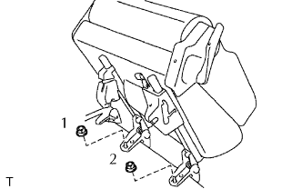
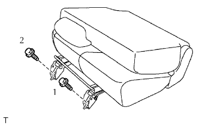
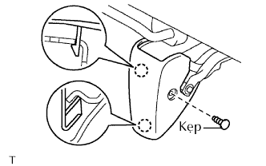

CỤM GHẾ SAU NO.1 (cho bên phải) > LẮP |
| 1. LẮP CỤM GHẾ SAU NO.1 BÊN PHẢI |
Nghiêng lưng ghế hoàn toàn về phía trước.
Hãy để ghế vào trong cabin.
|  |
Gập hoàn toàn ghế về phía trước và lắp ghế bằng 2 đai ốc.
Khoá hoàn toàn ghế vào thân xe.
|  |
Xiết chặt 2 bulông từ phía trước theo đúng thứ tự như trong hình vẽ.
Trả lưng ghếù về vị trí vuông góc.
| 2. LẮP NẮP CHE BẢN LỀ NỆM GHẾ SAU TRÁI |
|  |
Cài khoá 2 vấu để lắp nắp bản lề.
Lắp kẹp.
| 3. LẮP NẮP CHE BẢN LỀ NỆM GHẾ SAU PHẢI |
| 4. KIỂM TRA VÀ ĐIỀU CHỈNH CÁC KHOÁ BỘ ĐIỀU CHỈNH TRƯỢT GHẾ |
Trong khi trượt ghế trước, kiểm tra rằng các bộ điều chỉnh bên trái và bên phải có thể dịch chuyển cùng nhau êm dịu và khoá đồng thời.
Nếu các bộ điều chỉnh ghế không khoá đồng thời, thì nới lỏng các bu lông bắt ghế để điều chỉnh vị trí của bộ điều chỉnh.